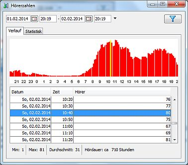
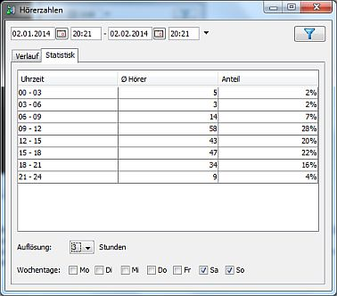

Überblick
Über den Aufruf von kannst Du den Verlauf Deiner Hörerzahlen abfragen. Die Zahlen werden alle 10 Minuten vom laut.fm-Server abgerufen.
Es handelt sich hierbei nicht um die Zahlen die Station Admin im laufenden Betrieb selbst in einem vorgegebenen Intervall abrufen und mitprotokollieren kann.
Filter
Oben kannst Du den Zeitraum auswählen für den die Einträge angezeigt werden sollen. Änderungen werden erst nach einem Klick auf den Filtern-Button rechts wirksam.
Historie
In der oberen Hälfte wird der Verlauf der Hörerzahlen graphisch dargestellt. Die Grafik umfasst maximal 24 Stunden. Zu Beginn werden die ersten 24 Stunden des ausgewählten Zeitraums angezeigt. Wenn Du in der Tabelle in der unteren Hälfte einen neueren Eintrag auswählst wird dieser in der Grafik sichtbar - die Grafik passt sich möglichst so an dass der ausgewählte Eintrag in etwa in der Mitte der Grafik liegt. Der Zeitraum für den ausgewählten Eintrag wird in der Grafik gelb dargestellt.
Wenn Du den Mauszeiger auf einer Stelle in der Grafik ruhen lässt wird der genaue Zeitpunkt sowie die Hörerzahl zu dieser Postion als Tooltip angezeigt.
In der Statusleiste unter der Tabelle findest Du noch einige statistische Werte:
Statistik

Im Statistik-Bereich werden einige durchschnittliche Werte für bestimmte Zeiten des Tages angezeigt.
Unter der Tabelle läßt sich die Auflösung auswählen - also ob ein Wert pro Stunde oder ein Wert für einen Zeitraum von 2, 3, 4, 6 oder 12 Stunden angezeigt werden soll. Außerdem lassen sich die Wochentage auswählen die berüchsichtigt werden sollen. Man also z. B. auch gezielt Werte nur für Montags oder nur für Werktage abfragen.